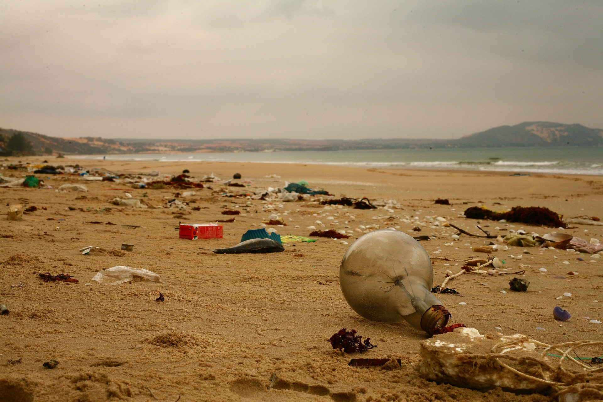
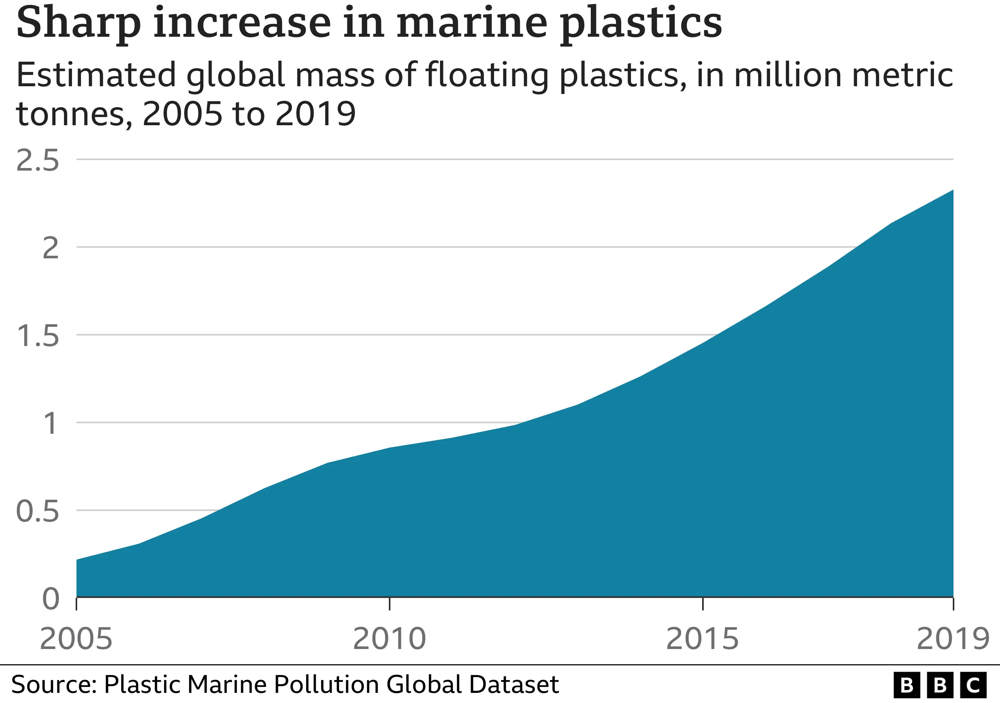
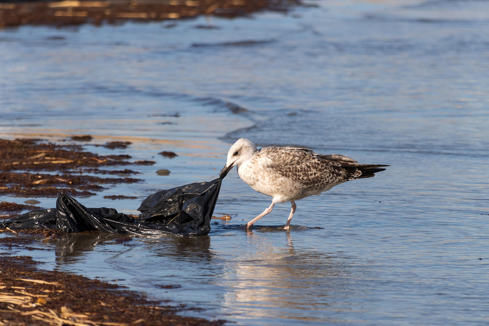
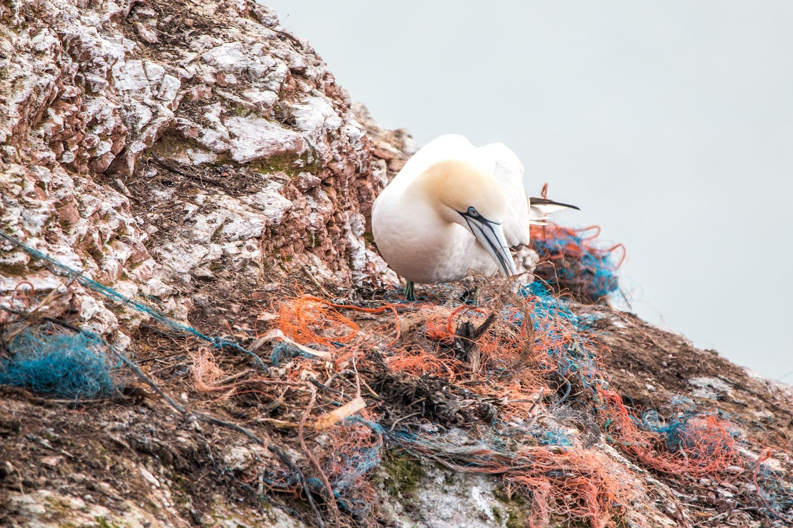

Ocean pollution is a growing problem in New Zealand. Explore the data and real impact behind it.

Plastic waste is one of the biggest threats facing New Zealand's oceans today. Bottles, bags, and packaging often end up washed onto beaches or floating in the sea, where they can take hundreds of years to break down.
Marine animals are especially vulnerable to ocean pollution. Fish, seabirds, and turtles can mistake plastic for food, or become tangled in discarded fishing nets and other debris.


Marine animals are especially vulnerable to ocean pollution. Fish, seabirds, and turtles can mistake plastic for food, or become tangled in discarded fishing nets and other debris.
Lost or abandoned fishing gear, sometimes called "ghost gear," continues to trap and harm marine life long after it is lost at sea, making it one of the most dangerous forms of ocean litter.
